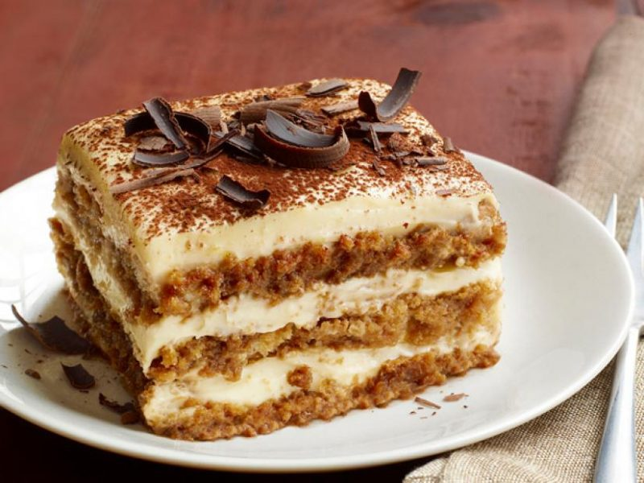

Hello to My Website
Lets Start Cooking

Bahan-bahan
Bahan Utamas
250g Anchor Cream Cheese
400ml Anchor Whipping Cream
90g gula kastor
1 sk esen vanila
1 1/2 cwn kopi
1 sb gula
22 Keping Biskut Ladyfinger/Savoiardi
Serbuk koko
Loyang Bulat Saiz 9 Inci
Cara Memasak
Penyediaan Utama
- Dalam mangkuk, masukkan cream cheese dan tekan-tekan hingga hancur.
- Tambah 50ml whipping cream dan 90g gula, kacau hingga sebati.
- Masukkan esen vanila dan kacau lagi hingga sebati.
- Dalam mangkuk lain, pukul baki 350ml whipping cream hingga soft peak./li>
- Masukkan whipping cream ke dalam adunan cream cheese dan gaul perlahan-lahan.

Tiramisu